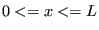
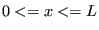
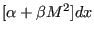
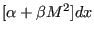
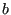
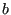
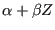
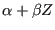
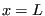
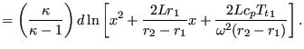

Next: Restrictor, Long Orifice Up: Fluid Section Types: Gases Previous: Gas Pipe (Fanno) Contents
In the present section a rotating gas pipe with a varying cross section and friction is considered. Although the gas pipe Fanno is a special case of the rotating gas pipe, its governing equations constitute a singular limit to the equations presented here. Therefore, for a gas pipe without rotation and with constant cross section the equations here do not apply. The equivalent of Equation (75) now reads ([26], Table 10.2 on page 515):
where  is the shortest distance from the rotational axis,
is the shortest distance from the rotational axis,  is the
rotational speed and
is the
rotational speed and  is the local cross section of the pipe. Assuming that
the radius
is the local cross section of the pipe. Assuming that
the radius  of the pipe varies linearly along its length
:
of the pipe varies linearly along its length
:
| (100) |
one obtains for :
| (101) |
Taking for  ,
,  ,
,  and
and  the mean of their values at the end of the pipe one
obtains for the second term in Equation (99)

where
the mean of their values at the end of the pipe one
obtains for the second term in Equation (99)

where
| (102) |
and
| (103) |
Therefore, Equation (99) can now be written as:
| (104) |
or (using partial fractions):
where
| (106) |
| (107) |
and
| (108) |
From the above equations one notices that for a non-rotating pipe with
constant cross section and  and  become
undeterminate. Therefore, although the gas pipe Fanno is a special case, the
present formulas cannot be used for this element type. Integrating Equation
(105) leads to:
and  become
undeterminate. Therefore, although the gas pipe Fanno is a special case, the
present formulas cannot be used for this element type. Integrating Equation
(105) leads to:
Its derivatives are:
![$\displaystyle \frac{\partial f}{\partial M_1} = - \left [ \frac{a}{Z_1} + \frac...
...ta Z_1)} + \frac{c}{\left ( 1 + \frac{\kappa -1}{2} Z_1 \right) } \right] 2 M_1$](img537.png) |
(110) |
and
| (111) |
Focussing on the subsonic range, one has
 . Therefore, the
only term in Equation (109) which may cause problems is the second
term. This is because
. Therefore, the
only term in Equation (109) which may cause problems is the second
term. This is because  and
and  do not necessarily have the same
sign, therefore the logarithm may be undefined, i.e. the function
 may have a zero in between the ends of the pipe. This boils down to
the condition (cf. Equation (99)) that in part of the element the
Mach number is increasing and in part decreasing.
do not necessarily have the same
sign, therefore the logarithm may be undefined, i.e. the function
 may have a zero in between the ends of the pipe. This boils down to
the condition (cf. Equation (99)) that in part of the element the
Mach number is increasing and in part decreasing.
In general, convergence of a pipe and friction leads to increasing Mach numbers, divergence and centrifugal forces to decreasing Mach numbers. Sonic conditions should be avoided during the calculation. Especially if sonic conditions are observed at the end of a converged calculation, the result may not be correct.
Although the rotating pipe is adiabatic, i.e. no heat is transported to the envoronment, the total temperature changes due to conversion of rotational energy into heat or vice versa. Centrifugal motion leads to a total temperature increase, centripetal motion to a decrease. The change in total temperature amounts to [26]:
 |
(112) |
For a linear varying radius integration leads to:
| (113) |
Evaluating this expression for  yields the total temperature increase across the pipe. In order to estimate the total pressure increase (e.g. to arrive at sensible initial conditions) one can again use the formulas in [26] (discarding the friction effect):
| (114) |
Substituting a linear relationship for  and the result just derived for
and the result just derived for
 leads to:
leads to:
![$\displaystyle = \left( \frac{\kappa }{\kappa-1}\right) \frac{\omega^2}{c_p} \fr...
...ft [ r_1 + \left( \frac{r_2-r_1}{2} \right ) \frac{x}{L} \right ] x \right \} }$](img547.png) |
(115) | |
![$\displaystyle = \left ( \frac{ \kappa }{\kappa-1}\right) \frac{2\left [ x + \fr...
...2 + \frac{2Lr_1}{r_2-r_1}x + \frac{2Lc_p {T_t}_1}{\omega^2(r_2-r_1)} \right ] }$](img548.png) |
(116) | |
|  | (117) |
Integrating finally leads to:
| (118) |
It is important to notice that the rotating gas pipe is to be used in the relative (rotational) system (since the centrifugal force only exists in the rotational system). If used in the absolute system it has to be preceded by an absolute to relative element and followed by a relative to absolute element.
The rotating gas pipe is described by the following parameters (to be specified in that order on the line beneath the *FLUID SECTION, TYPE=ROTATING GAS PIPE card):
Example files: rotpipe1 up to rotpipe7.